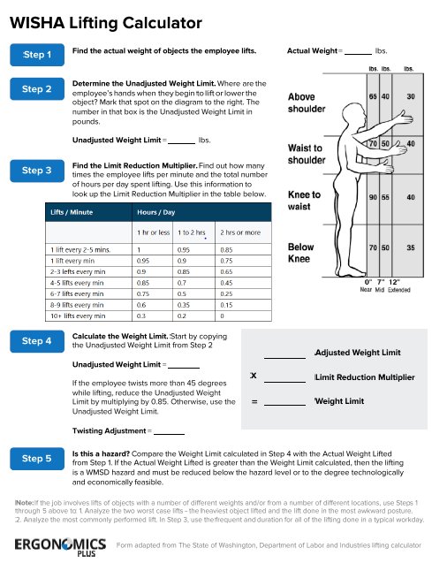
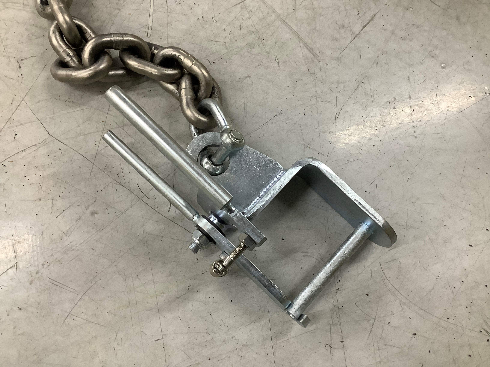
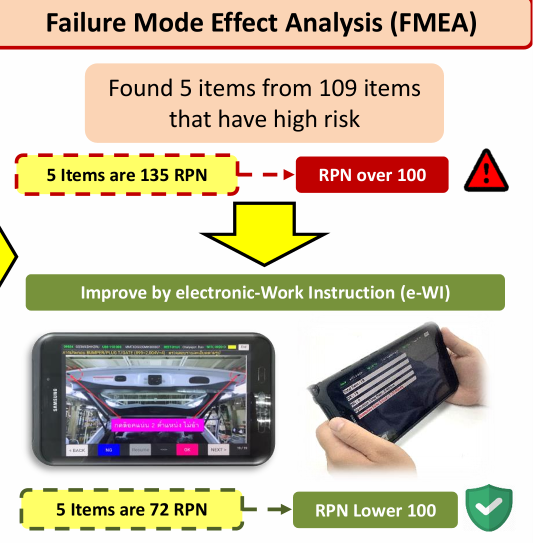
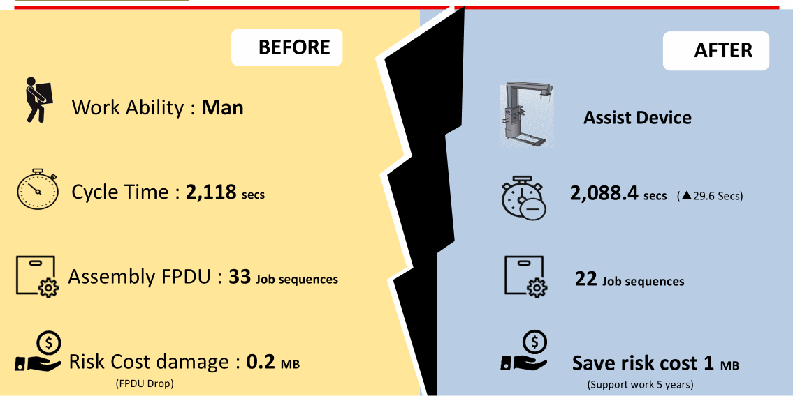

The Challenge
The FPDU (Front Power Drive Unit) is a critical component that transforms electrical energy in PHEV vehicles. At Mitsubishi Motors Thailand's Factory #1 PHEV manual line, the F01 station required manual lifting and assembly of the FPDU into the vehicle chassis.
1. Overweight: FPDU actual weight 16.5 kg, which exceeded MMC global ergonomic recommendation of 15 kg max for single-person manual lifting. Each operator handled this every cycle.
2. High waste time: Assembly process required 33 job sequences at the F01 station, with operators walking back and forth to fetch tools, brackets, and surrounding parts, pushing cycle time above target.
Safety risk: FPDU drop damage estimated at ฿200,000 per incident; cumulative operator strain risk on multi-year basis.


My Role
As the engineering intern assigned to the Production Engineering (Assembly) team, I led the design phase and procurement coordination while collaborating with four mentors and cross-functional teams across Production Engineering, Vehicle Production, Maintenance, and Safety.
Behind the engineering, I was just the third-year mechanical-engineering intern who walked into Factory #1 in June 2020 and was handed a real problem on a live production line.

Design Phase · SQCDE Methodology
I generated 8 design alternatives for the assist device, then evaluated each using SQCDE (Safety, Quality, Cost, Delivery, Environment), Mitsubishi's structured comparison framework, with input from all four cross-functional stakeholder teams.
Best overall SQCDE score (17): balanced cost (under ฿400K), high safety rating from MT and Safety teams, low maintenance overhead, and floor-mobile design allowing flexible repositioning along the manual line.
Each idea was scored against the SQCDE matrix with the four stakeholder teams (PE Assembly, Vehicle Production, Maintenance, Safety) keeping comments. Idea 3 won on the consolidated compare sheet:
| # | Design idea | SQCDE score |
|---|---|---|
| 1 | C-Shape Air Pulley Dolly | 15 |
| 2 | Mechanical Arm Dolly | 14 |
| 3 | C-Shape Air Cylinder Lifting Dolly ★ selected | 17 |
| 4 | Hydraulic Dolly | 14 |
| 5 | KBK Rail · Two I-Beam | 15 |
| 6 | KBK Rail · Cantilever Beam | 15 |
| 7 | Mechanical Arm · KBK Rail | 13 |
| 8 | Spring Balancer + KBK Rail | 13 |


Engineering Design & Analysis
Idea 3 still had to become a real, safe, buildable machine. I carried the mechanical design from the ergonomic root cause through kinematics, structure and a layered safety system, then specified all of it for the maker in the formal MMTh tooling sheet.
The trigger was an ergonomic limit: the FPDU weighs 16.5 kg, above MMC's 15 kg single-person manual-lifting recommendation. I verified the manual-handling risk against the standard before committing to a powered assist device.
◆ Engineering documents · MMTh 2020

The device I specified, sized from the production basis and a structural safety factor:
· The centre-of-gravity of the FPDU (from the SolidWorks model) so the hooks balance the load cleanly
· A pure-mechanics system that raises and lowers the FPDU by balance load (air balance), not a powered actuator
· A device whose base slides under the existing FPDU rack, adding zero floor footprint at the busy F01 station
I specified the operation as an 8-step concept flow in the tooling sheet, so the maker and the line operators built and worked to the same sequence:
The lifting interface is a balance-load hanging plate with short and long hooks that lock the FPDU at two points and lift it on a pneumatic system — the pure-mechanics solution the CGM asked for. The whole device runs on a dedicated, taped assist-device way with floor stoppers and a part-detect barrier.



On-Vehicle Mock-up & Measurement
Before a single CAD part, I took the design to the actual PHEV on the F01 line and measured everything: the reach over the bumper, the hood-rod clearance, the angle and stroke to land the FPDU on its shelf, and the footprint of the rack the base had to slide under. Those field numbers (90 / 40 / 25 / 180 cm, 30 cm stroke, the 21°→60° approach) are exactly what drove the device geometry above.
◆ On-vehicle mock-up · 24 Jul 2020


SAP Procurement Workflow
Once the design was approved, I coordinated the procurement and vendor selection process. This is where I had hands-on SAP exposure: observing and operating within the live SAP environment used for PR/PO submission, monitoring approval workflows, and tracking the asset from request through deployment.
Vendor Selection & Cost Breakdown
Vendor: Mar-Dec Engineering Co., Ltd. (Chonburi, Thailand), selected via RFQ comparison against the spec I wrote. The chosen unit was the Mar-Dec "Omega Buddy" manipulator, a floor-mobile air-balance lifter purpose-fitted to the FPDU.
| Attribute | Specification |
|---|---|
| Model | Mar-Dec "Omega Buddy" manipulator |
| Max load | 18 kg (FPDU 16.5 kg + margin) |
| Max vertical stroke | 400 mm |
| Installation | Floor-mobile type, swivel casters + foot brake |
| Balancing | Up-down manual control, built-in air-supply rotary joint |
| Gripper | Pneumatic gripper + 360° tooling rotary joint |
| Safety devices | Part-detecting sensor · grip-complete indicator · anti-part-fall system |

The quotation tied payment to delivery milestones, so MMTh only paid as the maker proved progress — the same milestone discipline I now use on ERP go-lives:
| Milestone | Payment |
|---|---|
| PO received & contract signed | 20% |
| Work 50% complete | 30% |
| Work 100% complete | 40% |
| Hand-over & all documents submitted | 10% |

Asset Management
Once delivered and commissioned, the assist device was registered as a fixed asset in the MMTh SAP system with a 5-year support coverage from Mar-Dec Engineering. I authored the Standard Operating Procedure (SOP) document for operators, covering 5 main check steps: safety plug verification, dolly engagement, pickup confirmation, transport-and-mount, and return to home position.
Execution & Schedule
The next-action plan handed off from design into procurement and install, each step with an owner and a due date. My step (the MSR) fed the SAP chain run by PE Assembly:
| Step | Detail | Owner (PIC) | Due date |
|---|---|---|---|
| 1 | MSR · Maker Selection Sheet (Step #2) | Intern · Chatree | 29 Jul 2020 |
| 2 | Issue e-AR → PR → PO | PE Assy · Mr. Thirapong | 4 Aug 2020 |
| 3 | Approved drawing | PE Assy · Mr. Thirapong | 12 Aug 2020 |
| 4 | Implement / install | PE Assy · Mr. Thirapong | 30 Aug 2020 |
Overall schedule · Jun–Sep 2020
● On plan at handoverTasks 1–3 (tooling sheet, maker selection, e-AR) were my deliverables, finished inside the internship. Procurement and build (4–9) were handed to PE Assembly on a fixed schedule tied to a 10 / 20 / 30 / 40% payment release — all on plan at handover. The whole project ran under tooling sheet TS-PE-A-20-006.
The whole project ran under Tooling / Facility Planning Sheet TS-PE-A-20-006, the controlled MMTh document I authored and routed for approval. It fixed the production basis (8.5 hr/shift, 4,846 hr/yr, max 7,269 units/yr, 1.5 JPH, >99% up-ratio), the construction scope, the hot-work / fire-safety permits, the electrical & equipment brand standards, the 9-line project schedule, and the deliverables on completion (As-built 2D CAD + 3D CATIA, bilingual operation & maintenance manuals, training docs, one week of supervisor stand-by).
I also tracked procurement readiness and the build budget as living artifacts — a preparation-status tracker I reviewed against the PJL build stage, and the cost assessment I sent to purchasing.
◆ Recreated from my MMTh 2020 project-management artifactsPreparation status · ASSY shop readiness
▲ Yellow · 3 items at risk| # | Job detail | Status | Readiness |
|---|---|---|---|
| 1 | Preparation area · PHEV line | DONE | 100% |
| 2 | ALC system · LAN / network | DONE | 100% |
| 3 | Remove cable transfer | DONE | 100% |
| 4 | Bird & dolly cable transfer | ON PLAN | 80% |
| 5 | Pinka-yoke system | ON PLAN | 80% |
| 6 | DC-tool system | ON PLAN | 80% |
| 7 | Glass-sealing M/C modify | DONE | 100% |
| 8 | CPM asset device | DONE | 100% |
| 9 | Door asset device | DONE | 100% |
| 10 | Lifter cabin · C-1, C-2, F-3 | DONE | 100% |
| 11 | Lifter docking · FR & RR SUS | DELAY | 30 → 90% |
| 12 | M/C sub-assy · FR & RR strut | DELAY | 30 → 90% |
| 13 | Battery-pack asset device | DELAY | 30% |
| # | Job detail | Status | Readiness |
|---|---|---|---|
| 14 | Hoist hanger · picking part | DONE | 100% |
| 15 | Brake filling M/C | DONE | 100% |
| 16 | LLC filling M/C | DONE | 100% |
| 17 | Standard blocker | DONE | 100% |
| 18 | Tool & torque | DONE | 100% |
| 19 | Sub-assy table · trim/OS/final | DONE | 100% |
| 20 | Tester-line modification | DONE | 100% |
| 21 | Exhaust adaptor · tester line | ON PLAN | 88% |
| 22 | Pre-MET preparation | DONE | 100% |
| 23 | e-Check preparation | ON PLAN | 50% |
| 24 | Traceability preparation | ON PLAN | 50% |
| 25 | Quick & normal change M/C | DONE | 100% |
| 26 | Traffic control · tester line | DONE | 100% |
Three machine-preparation items — lifter docking (FR/RR SUS), M/C sub-assy (FR/RR strut) and the battery-pack asset device — slipped on the PJL 1st unit. A back-up plan was set and all three complete from the PJL 2nd unit.
Cost assessment · sent to purchasing
฿456,200 estimate| Cost item | Material | Labour | Total ฿ |
|---|---|---|---|
| Direct cost | |||
| Manipulator · Mar-Dec Omega Buddy | 226,700 | 117,500 | 344,200 |
| Safety function · floor rail & stopper | 17,500 | 12,500 | 30,000 |
| Air-treatment unit | 20,000 | 5,000 | 25,000 |
| Design · mechanical doc & licence | — | 10,000 | 10,000 |
| Direct subtotal | 264,200 | 145,000 | 409,200 |
| Indirect cost | |||
| Labour · fabrication, install, stand-by | — | 13,600 | 13,600 |
| Transportation · material, EQ, manpower | 8,400 | — | 8,400 |
| Overhead & profit | — | 25,000 | 25,000 |
| Indirect subtotal | 8,400 | 38,600 | 47,000 |
| Grand total | 272,600 | 183,600 | 456,200 |
The build-up estimate I prepared for purchasing on the FPDU assist device (maker: Mar-Dec Engineering). The maker's actual quotation (QT2007/092-1) came in at ฿460,314 incl. VAT — within 0.9% of this estimate.


Biweekly Internship Log
The week-by-week record I kept and had signed off by my supervising engineers, from onboarding to the final presentation. It traces the same implementer arc I use today: study the process, design options, select, cost, validate, hand over.
| Period (2020) | Phase | Key work accomplished |
|---|---|---|
| 1–5 Jun | Onboarding | Induction (company profile, safety, process overview, warehouse, education academic); PE Assembly orientation |
| 8–12 Jun | Study | Surveyed the F01 station; studied trim / chassis / final-line assembly; interviewed FPDU operators; sketched first device ideas; presented proposal to the chief engineer |
| 15–19 Jun | Concept | Consulted the manager on designs; learned SQCD; researched assist-device types; built the tooling sheet; presented SQCD to the general manager |
| 22–26 Jun | Selection | Presented the rail assist device to the GM; finalised the tooling sheet; drafted the MSR; researched operation time |
| 29 Jun–3 Jul | Approval | Presented the internship to the CGM; researched Intelligent Factory Automation (IFA); appointed bidding with the maker; re-balanced the F01 sequence |
| 6–10 Jul | Costing | Ran assessment & price breakdown; confirmed true function with the maker; prepared the concept presentation; planned the quality self-check |
| 13–17 Jul | Quality | Ran FMEA; calculated RPN (Severity × Occurrence × Detection); presented to CGM Assembly; built the slide deck |
| 20–26 Jul | Validation | Studied e-WI in Factory 1; presented the device to Maintenance, VP-Assembly and Safety; mock-up tested on the PHEV car |
| 27–31 Jul | Handover | Investigated factory areas for the cohort; delivered the final presentation & Q&A; cleared all reports |
Quality Improvement · FMEA
Beyond cycle time reduction, I conducted Failure Mode and Effects Analysis (FMEA) across 109 risk items identified in the new assembly process, finding 5 items with RPN (Risk Priority Number) over 100, requiring intervention.
· Baseline: 5 high-risk items averaged 135 RPN (above 100 threshold = critical)
· Intervention: Designed electronic Work Instruction (e-WI), a mobile-based step-by-step guide with photo references and OK/NG confirmation per critical step
· Result: RPN reduced to 72 (below 100 = acceptable) · 46.7% risk reduction


Engineering Skills Applied
The design drew on five university-level engineering subjects, weighted by their contribution to the final solution:
Tools & Methodologies
Time-Motion Study · the 29.6-second proof
The headline cycle-time saving wasn't an estimate — I measured it. Using a Standardized Work time study (the same lean method behind SWCT, Yamazumi and Takt-time balancing), I timed every operation at the F01 station and split each into walk · work · self-check time.
The insight: the old process forced the operator to repeatedly walk to fetch and return a wheel-tool dolly carrying sub-parts to the FPDU. Because the new assist device travels together with the FPDU, those sub-assemblies ride along on the device — so the walking simply disappears on the affected operations.
◆ Standardized-work time study · MMTh 2020At the cycle level the result is clean: every second of the saving came from walk time. The work and self-check time were unchanged, so the total fell by exactly the walk time removed.
| Time component · F01 cycle | Before | After | Saved |
|---|---|---|---|
| Walk time · affected operations | 48.8 s | 19.2 s | +29.6 s |
| Work + self-check time | unchanged | 0 s | |
| Total cycle time · F01 | 2,118 s | 2,088.4 s | +29.6 s |
The walk time removed, traced operation by operation. Two steps cost a little extra device-handling time — shown honestly — but the net is the 29.6 s I claimed:
| Op | Operation at F01 | Walk before | Walk after | Saved |
|---|---|---|---|---|
| 01 | Take first sub-assembly to the FPDU | 3.2 s | 5.0 s | −1.8 s |
| 07 | Assemble Electronic Control Unit + 2 bolts (on the dolly) | 6.4 s | 0 s | +6.4 s |
| 12 | Assemble FR-PDU upper bracket (on the dolly) | 6.4 s | 0 s | +6.4 s |
| 16 | Mount Power Drive Unit to bracket (device-assisted lift) | 4.0 s | 8.0 s | −4.0 s |
| 28 | Assemble HV cable / compressor to FPDU (DC tool on dolly) | 6.4 s | 0 s | +6.4 s |
| 29 | Assemble generator assembly to FPDU (DC tool on dolly) | 6.4 s | 0 s | +6.4 s |
| 38 | Lift battery from rack into battery box (device returns, no wheel-tool) | 8.0 s | 6.2 s | +1.8 s |
| 46 | Assemble FR-deck garnish, 3 clips (no wheel-tool return trip) | 8.0 s | 0 s | +8.0 s |
| Net walk time removed from the F01 cycle | 48.8 s | 19.2 s | +29.6 s | |
Productivity · Before → After
The consolidated productivity summary the project was judged on: every line moved from a manual baseline to an assist-device outcome.
| Metric | Before | After |
|---|---|---|
| Work ability | Manual lift · 1 operator | Assist device |
| Cycle time · F01 station | 2,118 s | 2,088.4 s (▲ 29.6 s) |
| Assembly job sequences | 33 | 22 (▲ 11) |
| FPDU handling | 16.5 kg by hand · over 15 kg MMC limit | Device-assisted · within limit |
| Risk cost | ฿0.2M damage · FPDU drop | Save ฿1M risk · 5-year support |

Mentor Evaluation
My supervising engineer's end-of-internship assessment across seven behaviours, five of them rated the top band:
"Please keep logical thinking to improve in everyday life and other ways." — Aphichai Suppharangsri · Manager, MMTh · 31 Jul 2020
The Award
On 30 July 2020, at the MMTh Talent Internship final presentation, the FPDU Assist Device was named Best Achievement of the cohort. I received the trophy and certificate on stage from the CEO of Mitsubishi Motors, who had flown in from Japan — a quietly huge moment for a third-year student, face shield and all.


The award had my name on it, but it really belonged to the Assembly Engineering team — the Chief Engineer and Director of Engineering who answered every question on the floor and trusted an intern with a real line problem. That's the kind of team I've tried to be part of ever since.
Why I Won the Award
The Best Achievement Award is given to the intern judged to have delivered the strongest end-to-end project across the full cohort. Three factors that I believe contributed:
1. End-to-end ownership. I didn't just design: I evaluated alternatives systematically (SQCDE), drove vendor selection, coordinated SAP procurement, and authored operator SOPs. Most interns owned one slice; I owned the whole pipeline.
2. Quantified business impact. ฿1M risk-cost saving, 29.6-second cycle time reduction, 11 job sequences eliminated, 46.7% FMEA risk reduction: every claim was measured and traceable.
3. Cross-functional fluency. Worked productively with Production Engineering, Vehicle Production Assembly, Maintenance, and Safety: each team has different priorities; aligning them required structured stakeholder communication.
Go-Live · the device on the line
The best part came after I'd already left. In November 2020 — about three months after my internship ended — the FPDU assist device I designed went into real daily use on the PHEV manual line at Factory #1. Operators now raise the 16.5 kg FPDU with the machine instead of their backs, every single cycle.
◆ Live on the F01 line · Nov 2020


That's the moment a student's project stopped being a slide deck and became a tool real people use every shift — the first time I felt what it means to ship something that lasts. It's the same feeling I chase now on every ERP go-live.
What this gave me
This project planted the foundation for everything I do now in ERP consulting: cross-functional requirements gathering, vendor RFQ management, structured evaluation frameworks (SQCDE → today's gap analysis), and rigorous quality verification (FMEA → today's UAT defect management). The SAP exposure (even as end-user) gave me real intuition for how procurement workflows operate in a production environment, which directly informs my current SAP S/4HANA learning path.
◆ One-page recap · MMTh final presentation 2020